Traditional Japanese folk pottery epitomizes work produced with the ease of unconscious thought; it is work that is created without judgment and exemplifies pure artistic energy. Initially, Japanese pottery was produced to hold liquids or grains and to be eaten out of, each form surrendering to caressing hands. The sensation of touch became as important to the potter as that of the visual.
Ancient Japanese pottery dates back over twelve thousand years to the wondrous ceramics of the Jomon era; it was here that the first coiled pots emerged. Notice the frenetic decorative coils and waving soaring rims that exemplify this beautiful ancient ware. This Jomon ware of yesteryear is as impetuous and alive as today’s most contemporary work.
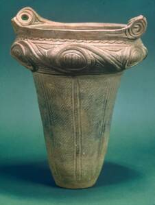
Jomon 12,500-1,500 bc
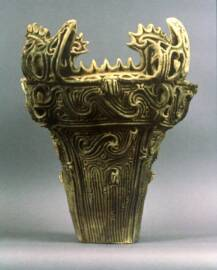
Jomon Storage Vessel 12,500-1,500 bc
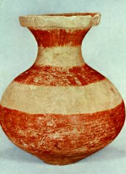
Neolithic Yayoi 2000-1000bc
Pottery made during the Yayoi period began displaying colored engobes and a more painterly style. These Neolithic farmers made pottery to be used for storage, yet the desire to decorate was of great importance to these ancient craftsmen.
As we move towards the 5th and 6th centuries, we see a simple feldspathic glaze being employed on the Sue period pottery. This beautiful glossy gray-green surface was the beginnings of Japanese celedons. As this glossy, clean surfaced ware was developing, the rugged Bizen and Tamba ware were being produced into the 1300's. Thick, bubbly glazes laden with ash, unglazed feet and uneven rims exemplify the beauty and total freedom of Bizen ware. With their irregularity and asymmetry, these sumptuous forms exhibit the essence of the Japanese concepts of beauty.
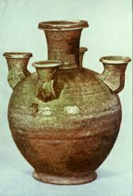
Sue 5th-6th C ad
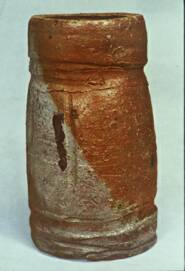
Bizen 1200-1300ad
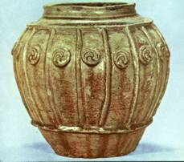
Seto 1200-1300ad
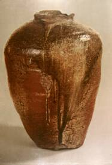
Tamba, Kamakura, 1200 ad
Tea bowls are synonymous with Japanese pottery. These humble forms were originally made in great quantities, providing functional ware for Japan's great pastime-drinking tea . Each piece, though mass produced was a symbol of a particular potter's body of work. In some Japanese workshops, an apprentice might make 500 tea bowls, pick one, and then destroy all the others. That one tea bowl would be the essence of that potter's work, and the apprentice would discover his style.
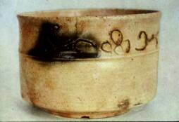
Seto 1200-1300 ad
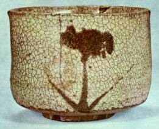
Karatsu 1600-1700 ad
As you look upon the tea bowls in this presentation, think how your hands would lovingly fondle each piece, and how your eyes might linger on the inside of each bowl, gazing at the pattern made by tea leaves. This is the core of Japanese folk pottery. The concept of the “Unknown Craftsman” originated from the every day humble ware produced by all the unknown potters working in the unconscious spirit of the collective soul. This philosophy was passed down by generations of potters resulting in a spontaneous interaction with clay and a total command of the materials. Having no need for identity, much of this ware remained unsigned.
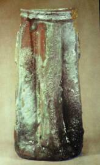
Iga
1585-1700 ad
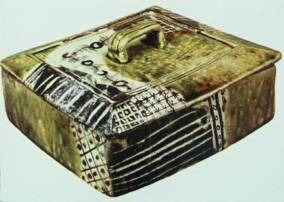
Oribe Food Box 16th C ad
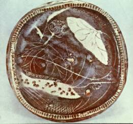
Shino 16th C ad
Iga, Oribe and Shino ware maintained the traditional characteristics of Japanese folk pottery, with their uneven rims and thick, spontaneously flowing glazes. As in the example of Oribe, Oribe was a family name, not an actual period. However, pottery evolved as the livelihood of not just one family, but its many generations that were to follow. We begin to see pottery designated by family names, such as Oribe and Kenzan, and the practice of the Unknown Craftsmen diminished.
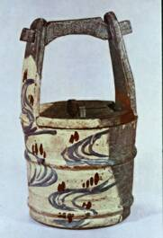
Kenzan 1664-1743
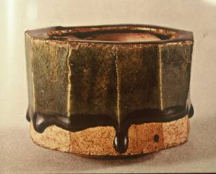
Oribe Incense Burner 16th C ad
As pottery evolved into more decorative containers, the paintings on the ware became more structured, and the Japanese claimed a vigorous retail market. During the 17th century, the demand for hand painted porcelain grew worldwide and the highly refined Nabeshima ware was produced. The Dutch East India Company shipped this Japanese Export Porcelain throughout the world. The work was so mass-produced; it lost much of the individualization of traditional folk pottery. However, the clean lines of this industrial ware provided the background for complex brushwork, making it once again, masterful work and outstanding in the competitive market.
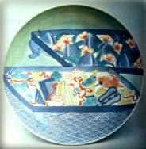
Nabeshima 1688-1736
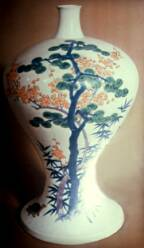
Nabeshima 16thC
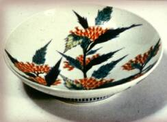
Nabeshima 18th C ad
By the 20th century, the word “mingei” surfaced, which means “folk art”, or art made by the unconscious collective. This phrase was termed by the Japanese art critic Soetsu Yanagi (1890-1961) and the potters Shoji Hamada (1894-1978) and Kanjiro Kawai (1890-1966). They inspired a movement that rejuvenated the return to traditional folk art in Japan. These three men also founded the Japan Folk Art Association and published the journal, Mingei, which since 1931, is still in print. Then, Yanagi, Hamada and the English potter, Bernard Leach toured Europe and the United States in the 1950’s, lecturing to eager Western potters the aesthetics of hand made pottery and the Japanese concepts of beauty.
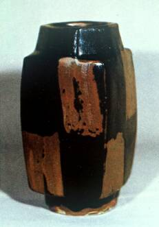
Hamada, Shoji 20th C
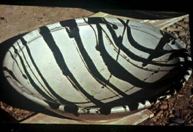
Hamada, Shoji 20th C
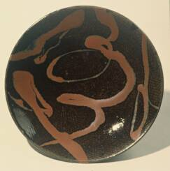
Shimaoka, Tatsuzo b. 1919
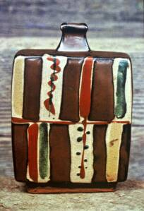
Hamada, Shoji 20th C
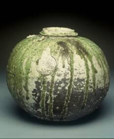
Tsujimura, Shiro, b. 1948
They spoke of the irregular and the asymmetrical, and how these attributes characterize the traditional Japanese concept of beauty. Japanese ceramics was not just an influence in style, but also an exploration in philosophy. It was an inquiry into the speculative rather than the observational, and it created the freedom to design. American potters were thirsty for this unconstrained approach to clay and welcomed the new aesthetic.
The latter part of the 20th century witnessed not only the return to handcrafted folk work but also the emergence of the "artist potter”. Individual Japanese studio potters produced elaborate one of a kind pieces, again proving the mastery of fine craftsmanship in the long tradition of Japanese ceramics. The beautiful vessels of Tommimoto and Tokuriki clearly reflect this mastery of detail, while the unconscious pottery of Hamada, Shimaoka and Tsujimura reveal the fabric of traditional folk pottery in a contemporary society.